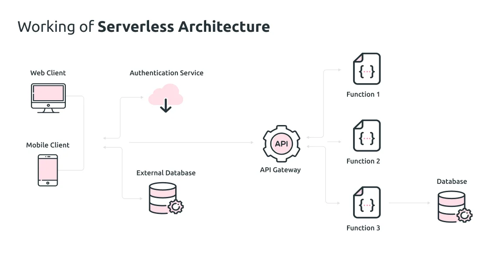
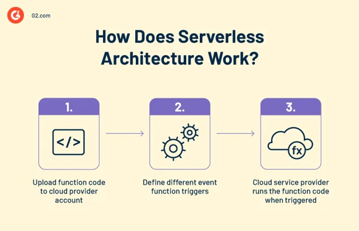
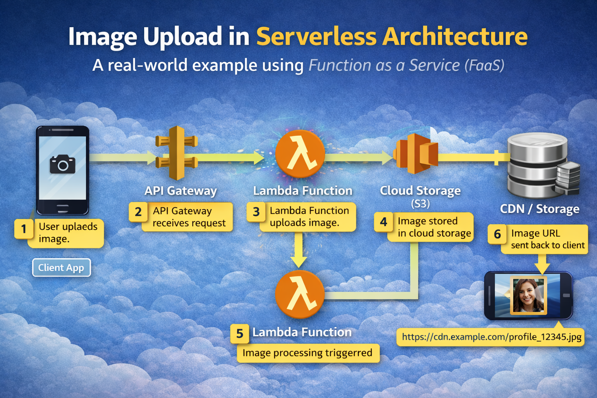

System Design Mastery
Master scalable systems with premium insights
☁️ Serverless Architecture
1️⃣ What it is
Serverless architecture is a cloud computing model where developers run code without managing servers.
The cloud provider automatically handles infrastructure, scaling, and maintenance, while developers focus only on application logic.
Even though servers exist, they are fully managed by the cloud provider, so developers never manage them.
You only write functions.
💡
Simple idea:
Client → API Gateway → Serverless Function → Database
Examples of serverless platforms:
- AWS Lambda
- Google Cloud Functions
- Azure Functions
2️⃣ Why It Is Called “Serverless”
Servers still exist, but developers do not manage them.
Cloud providers like Amazon Web Services, Google Cloud, Microsoft Azure handle the infrastructure.

⚙️ Key Components
1️⃣ Client
The client is the user interface that sends requests.
Examples:
- Web browser
- Mobile app
- IoT device
Example request:
User clicks "Place Order"
2️⃣ API Gateway
API Gateway acts as the entry point for all requests.
Responsibilities:
- Route requests
- Authentication
- Rate limiting
- API management
Example:
Client → API Gateway → Lambda Function
3️⃣ Serverless Functions (FaaS)
FaaS = Function as a Service
Function as a Service (FaaS) is a cloud computing model where small pieces of code (functions) run only when triggered by events.
Developers write individual functions instead of full servers or applications.
Each function runs independently when needed.
Examples:
- AWS Lambda
- Google Cloud Functions
- Azure Functions
Example function:
PlaceOrderFunction()
ProcessPaymentFunction()
SendEmailFunction()
These functions run on demand and scale automatically.
4️⃣ Database / Storage
Serverless applications usually use managed databases.
Examples:
- DynamoDB
- Firebase
- MongoDB Atlas
- Cloud Storage
Responsibilities:
- Data storage
- Queries
- persistence
🔄 How Serverless Architecture Works
Example: E-commerce order
User places an order in the app.
Client sends request to API Gateway.
API Gateway triggers a Lambda function.
Function processes business logic.
Function reads/writes data to database.
Response returned to client.

Key Characteristics
1️⃣
Event-driven
Functions run when triggered by an event.
Example triggers:
- HTTP request
- file upload
- database update
2️⃣
Auto scaling
Cloud provider automatically scales functions.
Example:
10 users → 10 function
instances
1M users → 1M instances
If 1 million users request: Cloud automatically runs many function instances.
3️⃣
Pay-per-use
You pay only when code runs.
No idle server
cost.
Advantages
✔ No server
management
✔ Automatic scaling
✔ Cost efficient for low traffic
✔ Faster
development
⚠️ Disadvantages
1️⃣ Cold Start
Latency
Functions may take time to start if idle.
2️⃣ Vendor
Lock-in
Applications
depend on specific cloud providers.
3️⃣ Debugging
Complexity
Distributed functions
are harder to debug.
Real World Example : Image uploading
Input:
User image file (and metadata like userId, file type).
Output: Processed
image stored in cloud storage with a URL returned to the client.( Include original image,
compressed image, resized image, thumbnail image )
User Uploads Image (Client)
A user uploads an image from: Mobile app, Web browser
Example: Upload profile picture
The client sends an HTTP request with the image.
Client → API Gateway
API Gateway Receives Request
The API Gateway acts as the entry point.
Responsibilities: Receive HTTP request, Authenticate user, Route request to correct function
Client → API Gateway → Lambda Function
Lambda Function Executes (FaaS)
The request triggers a serverless function.
Example function: uploadImage()
Responsibilities: Validate image, Generate unique file name, Upload image to storage, Trigger further processing
Example code logic:
- Receive image
- Validate size and format
- Generate unique ID
- Store image in storage
Image Stored in Cloud Storage
The image is stored in a cloud storage service.
Examples: Amazon S3, Google Cloud Storage, Azure Blob Storage
Example: Image stored → S3 Bucket
s3://user-images/profile_12345.jpg
Event Triggered After Upload
After uploading the image, storage triggers another event.
Example event: ImageUploaded
This can trigger another function.
Image Processing Function
Another serverless function runs automatically.
Example: resizeImage()
Responsibilities: Create thumbnails, Compress image, Convert format, Run AI detection
Example output:
profile_original.jpg
profile_thumbnail.jpg
profile_small.jpg
Image URL Sent Back to Client
Finally, the system returns the image URL.
Example:
https://cdn.example.com/profile_12345.jpg
The client can now display the image.

🎯 Summary
Serverless architecture is a cloud computing model where developers run code without managing servers.
Applications are
built using event-triggered functions executed by cloud providers like AWS Lambda.
It
provides
automatic scaling, pay-per-use pricing, and faster development.
Check out this link for differences between all architectures